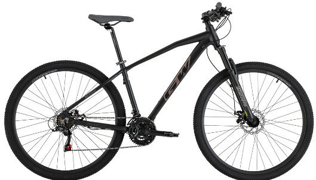
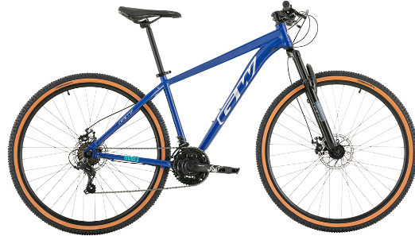
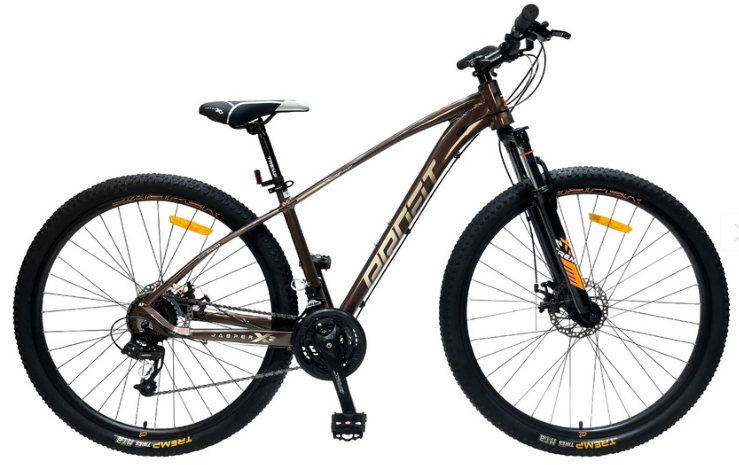
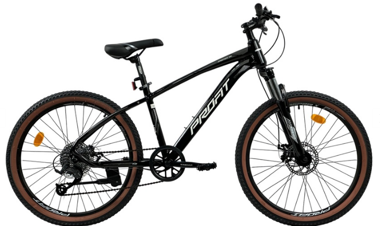
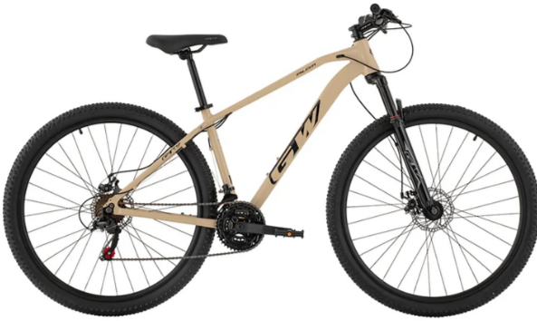
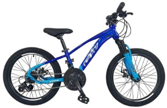
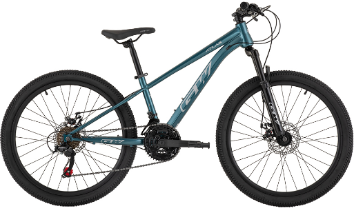
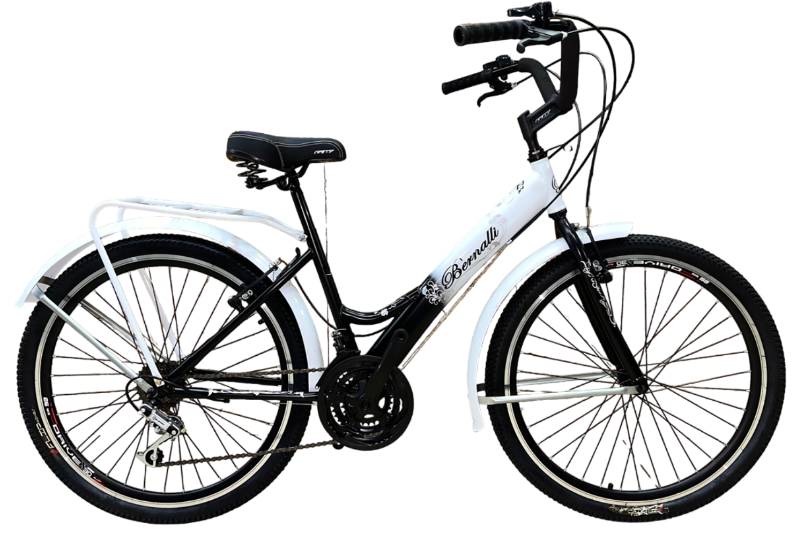

Montañera negra
Un diseño oscuro con llantas de buen agarre y suspensión delantera para recorrer caminos y senderos.
Descubre rutas en bicicleta para todos los niveles y reserva tu lugar en pocos pasos.
Reservar ahora
Un diseño oscuro con llantas de buen agarre y suspensión delantera para recorrer caminos y senderos.

Su cuadro azul y los detalles naranjas de las llantas le dan un estilo llamativo para paseos y rutas mixtas.

Su cuadro en tonos café, las llantas anchas y la suspensión delantera la hacen destacar en distintos terrenos.

Un cuadro negro con detalles claros y llantas de perfil robusto para disfrutar recorridos al aire libre.

El cuadro beige y las ruedas anchas le dan una apariencia sobria para paseos y caminos variados.

Su formato compacto y sus tonos azul y celeste son una opción colorida para recorridos recreativos.

Su cuadro azul verdoso y sus llantas anchas le dan un estilo versátil para explorar rutas recreativas.

El cuadro bajo, los guardabarros y la parrilla trasera completan su estilo clásico para la ciudad.

Su diseño claro, con guardabarros y parrilla trasera, ofrece una apariencia práctica para moverse por la ciudad.

Aquí conocerás cómo guiarte en dos ruedas hacia una aventura en familia. Unidos por el camino